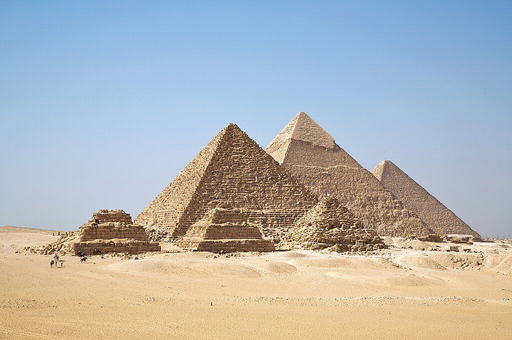

Les Pyramides de Gizeh
Présentation
Les pyramides de Gizeh ont été construites à l’époque de l’Ancien Empire, il y a 4 500 ans environ. Ce sont principalement la IIe, IIIe et IVe dynastie qui ont réalisé la plupart des constructions de pyramides en Égypte. Il s'agit d'une période qui s'étend sur environ 100 ans au début de l’Ancien Empire.Elles ont été construites dans l’optique d’être éternelles. Outre les tombes, les constructeurs y ont intégré des temples destinés aux dieux. Ces derniers renferment des offrandes et divers moyens de subsistance pour l’au-delà.
Popularité et Influence
Les pyramides de Gizeh sont l'attraction phare d'Égypte et contribuent de manière significative à l'industrie touristique du pays. Des millions de touristes du monde entier se rendent chaque année sur cet incroyable site historique pour admirer la grandeur des structures anciennes. Cet afflux de visiteurs joue un rôle vital dans l'économie égyptienne, favorisant les opportunités d'emploi et alimentant la croissance des entreprises connexes, telles que les hôtels, les restaurants et l'industrie du voyage en général.
Titres
Ce complexe pyramidal est classé au patrimoine mondial de l'humanité depuis 1979.